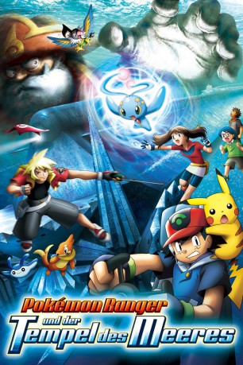

#4107 Pokémon 09 - Ranger und der Tempel des Meeres
Alternativ: Pokemon 09 Ranger and the Temple of the Sea (Englischer Titel)
 
 IMDB-Wertung: 6.1 / 10
IMDB-Wertung: 6.1 / 10  Metascore: 0
Metascore: 0 
Der Film beginnt mit einem durchs Wasser treibenden Ei. Bald taucht ein U-Boot auf und es schnappt sich das Ei mit einem Greifarm. Der Kapitän darin freut sich schon darauf, das all seine Wünsche in Erfüllung gehen. Kaum hat er fertig gesprochen, schnappt sich ein U-Boot-Mitglied das Ei. Hier handelt es sich um den Pokémon Ranger Jackie. Er flüchtet mit dem Ei und fängt sich ein Mantax mit seinen FangKom und reitet darauf davon. Damit keiner nachkommt, verpasst Mantax dem Boot noch einen Konfustrahl.
Jahr: 2006
Dauer: 105 Minuten
FSK:
Land: Japan Studio: Toho CompanyTonspuren:
Untertitel:
Auflösung: SD (720x576 (PAL DVD)) Größe: 0 MB
Genre: Action, Sci-Fi, Abenteuer, Fantasy, Animation/Trick, Familie
Regisseur: Kunihiko Yuyama, Armen Mazlumian
Drehbuch: Rob Hedden
Soundtrack:
Darsteller:
 Sarah Natochenny als Ash Ketchum / Clamperl
Sarah Natochenny als Ash Ketchum / Clamperl- Natasha Charles Parker als Judy - Ranger HQ Personel
- Craig Blair als Kyle / Galen
 Rachael Lillis als Horsea / Poliwag , archive sound
Rachael Lillis als Horsea / Poliwag , archive sound Michele Knotz als May / Manaphy / Jessie / Gorebyss / Medicham
Michele Knotz als May / Manaphy / Jessie / Gorebyss / Medicham- Kayzie Rogers als Max / Wobbuffet / Mime Jr. / Corsola
- Bill Rogers als Brock / Sceptile / Corphish / Shipmate #3
- Eric Schussler als The Phantom
- Rich McNanna als Jack Walker
 James Carter Cathcart als James / Meowth / Swellow / Munchlax
James Carter Cathcart als James / Meowth / Swellow / Munchlax Rodger Parsons als Narrator / Shipmate #2
Rodger Parsons als Narrator / Shipmate #2- Sean Elias-Reyes als Chatot
- Emlyn Elisabeth Morinelli als Lizabeth
- Annie Silver als Meredith
- Simcha Whitehill als Shep / Shipmate #1
- Becky als Judy
- Jason Flores Contreras als Pichu
- Hiroshi Fujioka als The Phantom
- Michael Haigney als Poliwhirl / Politoed , archive sound
 Megumi Hayashibara als Musashi
Megumi Hayashibara als Musashi Inuko Inuyama als Nyarth
Inuko Inuyama als Nyarth Unshô Ishizuka als Narrator
Unshô Ishizuka als Narrator- Miyako Ito als Aipom
- Kaori als Haruka
- Takafumi Kawakami als Mantine
- Kaori Manabe als HIromi
 Rica Matsumoto als Satoshi
Rica Matsumoto als Satoshi- Armen Mazlumian als Kyle
 Shin'ichirô Miki als Kojirou
Shin'ichirô Miki als Kojirou- Riichi Nishimoto als Wailord
 Daisuke Sakaguchi als Buizel / Mantyke
Daisuke Sakaguchi als Buizel / Mantyke- Kôichi Sakaguchi als Octillary
- Tomoyuki Shimura als Donphan
- Yuri Shiratori als Manaphy, Kyogre
 Yûji Ueda als Takeshi
Yûji Ueda als Takeshi- Kyôko Yamada als Masato
 Kôichi Yamadera als Jack Walker
Kôichi Yamadera als Jack Walker Ikue Ôtani als Pikachu
Ikue Ôtani als Pikachu
Datei: seit 22.07.2016
 Es gibt insgesamt 10 Filme in der Gruppe '.'
Es gibt insgesamt 10 Filme in der Gruppe '.'